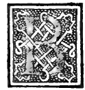

CAPITOLO XIX¶
Comme nelli luoghi angusti lo architetto se habia aregere in sua dispositione.

Bisogna multo alarchitecto essere a corto in consegliare altri in hedifitii e in la puntatione de lor modelli acio non in dachino adispendio inviile el patrone. Peroche el nostro Victruuio quando ben ha insegnato li debiti modi deli hedifitii con loro Symmetrie de loro proportioni dice. Interuira aleuolte langustie stretezza del luogo non permettara fabricare con tutte quelle solennità che alauera. Architectura se aspectano per lo impedimento del luogo che non lo permettara.
E per queste vesida tal recordo che non possendo exequere lopere vostre totaliter comme se donerebbe, dobiare sempre tenerne al quadro e al tondo comme ale doi principali forme deli doi linee recta e curua, E se non potrete in tutto farle a tutto quadrato ouer circolo prendarete di loro sempre qualche parte ouer parti nota o ver note comme adire la 1/2, el 1/3, li 1/4, li 1/5 et cetera o aloro circuito onero diametri e quelli proportionando sempre quanto più potrete in parti note che per numero se possano mostrare. Se non constretti dala irrationalita comme fra el diametro del quadro e sua costa.
Aloro segnarete con vostra squadra e sexto lor termini in linee con vostro desegno, Peroche auenga che non sempre per numero se possino nominare ma mai fia impedito che per linea superficie non se possino asegnare. Conciosia che la proportione sia molto più ampia in la quantità continua che in la discreta. Peroche larithmetico non considera se non della rationalita el Geometra della rationalita e irrationalita comme apieno ne dixe el nostro Euclide nel suo quinto libro deli elementi e noi secondo lui in Theorica e pratica anostro amaestramento in lopera nostra grande dicta Summa de Arithmetica. Geometria. proportioni e proportionalita in la 6. distinctione al primo tractato e primo articulo.
Impressa in Venetia nel 1494. e al Magnanimo Duca de vrbino dicata doue al tutto per vostre occurenze verimetto.
Auete ancora in questo comme vedici Lalphabeto degnissimo Antico secondo el quale potrete le vostre opere adornare e scriuere le volnnta deli patroni o sieno sepolchri o altri lauori. Quali certamente oltra el bisogno rendano venustissima lopera comme in molti luoghi per roma apare quelli già soliuano farle de metalli diuersi e quelle fermare in lor ponti che in Capitolio e al palazo de nerone leuestigie el manifestano.
E non si lagnino li scriptori e li miniatori se tal necessita habia messa in pubhco lo facto solo per mostrare che ledoi linee essentiaU recta ecurua sempre fanno tucte cose che in agibilibus se possano machinare e per questo negliochi loro senza lor penna epennello li ho posto el quadro etondo acio vechino molto bene che dale discipline mathematici tutto procede.
Auenga che lor forme sieno apiaco e qui al nostro dire porremo fine pregandone instantemente che fra voi luno con laitro auso debon fratelli voliate conferirue apiu dilucidatione de tutto peroche facile fia lo arogere ale cose trouate comme son certo li vostri peregrini ingegni faranno si per loro honore comme de laterra nostra dela quale sempre in ogni faculta corame dali vostri antenati potete hauere inteso sonno vsciti degni homini benché il luogo sia angusto pur e populoso. E buoni ingeni. Si in militaribus comme disopra sucinte scorremo comme in altre discipline e scientie. Che dele mathematici lorende chiaro el monarcha ali di nostri della pictura e architectura.
Maestro Pietro deli franceschi con suo penello mentre potè comme apare in vrbino bologna ferrara a rimino ancona e in laterra nostra in muro etaula aoglio e quazzo maxime in la cita darezzo la magna capella dela tribuna delaltar grande vna dele dignissime opere de Italia e da tutti commendata. E poi lo libro deprospectiua compose qual si troua in la dignissima bibliotheca delo Illustrissimo Duca de vrbino nostro. Si che ancora voi ingegniatiue el simile fare.